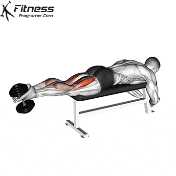
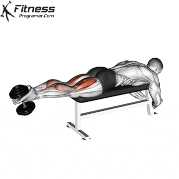

Leg press (2)
Do one of these

1
For dumbbells, sit on a bench with back support, holding dumbbells at shoulder height with palms facing forward. For the machine, adjust the seat so the handles align with your shoulders. Both exercises target the rear deltoid muscles.
2
Press the dumbbells or machine handles upward, focusing on engaging the rear delts, until your arms are fully extended but not locked out.
3
Lower the weights back to the starting position in a controlled motion, ensuring the rear delts remain activated throughout. Keep your core engaged and maintain proper posture.

 
